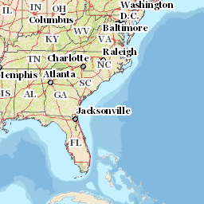

tiles2wmts
The web is awash in tiles...and cartographers using desktop GIS can use them. That beautiful layer you have in MapBox? Want to see it in QGIS? Want basemaps from that company in something besides their software? Well, here you go!
Making a WMTS Template
The WMTS spec allows RESTful calls and is agnostic to the source. By using the console in you favorite browser, navigate to the map you want to use as a WMTS layer. In the network tab, look for calls like this:
"http://basemap.nationalmap.gov/arcgis/rest/services/USGSTopo/MapServer/tile/4/6/4"
That is the request the browser is making to fill this image:

The numbers at the end (for ArcServer) are zoom-level/row/column of the image. Most other services would have zoom-level/column/row. Now for a little string substitution...
In the url, replace the numbers at the end with the WMTS substitution strings: {TileMatrix} for zoom-level,{TileRow} for row, and {TileCol} for column.
http://basemap.nationalmap.gov/arcgis/rest/services/USGSTopo/MapServer/tile/4/6/4
http://basemap.nationalmap.gov/arcgis/rest/services/USGSTopo/MapServer/tile/{TileMatrix}/{TileRow}/{TileCol}Then put that url into ResourceURL tag:
<ResourceURL format="image/png" resourceType="tile" template="your URL here"/>double check the format (some are jpg) "image/png", and you're off.
Try this working example:
http://eyensky.github.io/tiles2wmts/WMTSGetCapabilities.xml